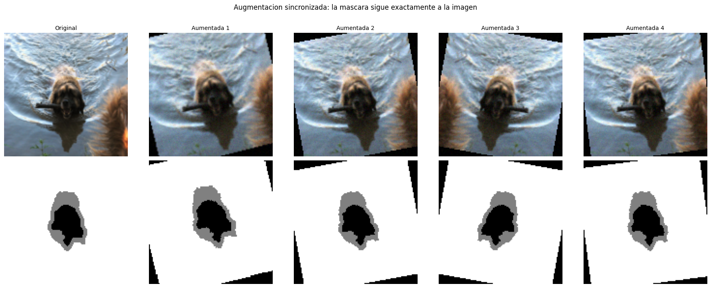
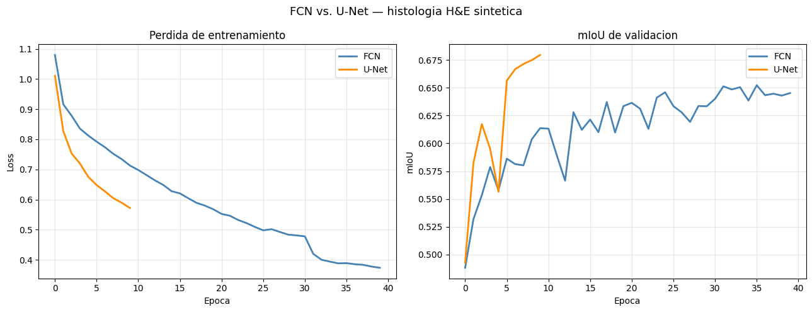
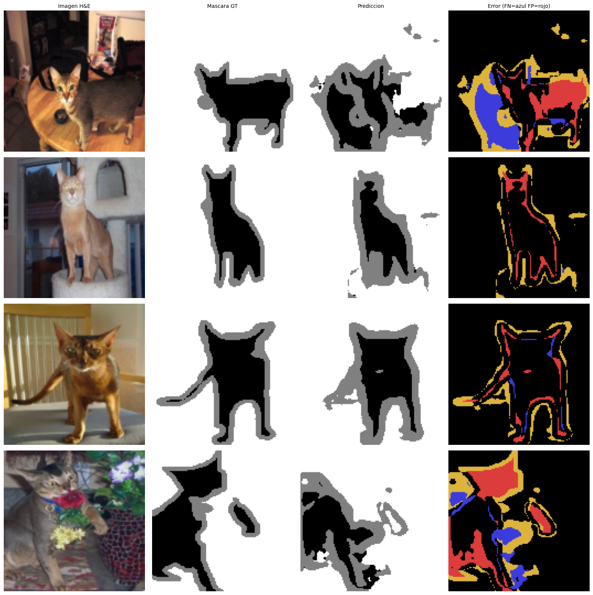

Segmentacion con Inteligencia Artificial#
Sustitucion por datasets reales#
Para usar este notebook con datos reales, reemplaza la seccion 2 por:
Dataset |
Clases |
Como descargarlo |
|---|---|---|
Oxford-IIIT Pet |
3 (mascota/fondo/borde) |
|
ISIC 2018 (lesion melanoma) |
2 |
|
DRIVE (vasos retinianos) |
2 |
|
MoNuSeg (nucleos celulares) |
2 |
|
Cityscapes (conduccion) |
19 |
|
Contenidos#
Fundamentos y formulacion matematica
Dataset
Arquitectura FCN
Arquitectura U-Net con skip connections
Funciones de perdida
Metricas de evaluacion
Data augmentation sincronizada
Entrenamiento y comparativa
Analisis de resultados
1. Fundamentos y formulacion matematica#
La segmentacion semantica asigna una etiqueta de clase a cada pixel de la imagen:
La red produce logits de forma \((B, K, H, W)\). La prediccion final por pixel es:
A diferencia de la clasificacion de imagenes, la segmentacion debe preservar la resolucion espacial a lo largo de toda la red. Esto requiere arquitecturas encoder-decoder que compriman la representacion semanticamente y luego la expandan recuperando el detalle espacial.
2. dataset#
import torchvision
import torchvision.transforms.functional as TF
import torch
import torch.nn as nn
import torch.optim as optim
import torch.nn.functional as F
from torch.utils.data import Dataset, DataLoader
import torchvision
import torchvision.transforms.functional as TF
import numpy as np
import matplotlib.pyplot as plt
import matplotlib.patches as mpatches
from PIL import Image
import random
N_CLASSES = 3
IMG_H, IMG_W = 128, 128
CLASS_NAMES = ['Fondo', 'Mascota', 'Borde']
CLASS_COLORS = [
(0, 0, 0),
(255, 255, 255),
(128, 128, 128),
]
def load_pair(img, mask):
img = TF.resize(img, [IMG_H, IMG_W])
mask = TF.resize(mask, [IMG_H, IMG_W], interpolation=TF.InterpolationMode.NEAREST)
img_t = TF.to_tensor(img)
mask_t = torch.from_numpy(np.array(mask)).long() - 1
mask_t = mask_t.clamp(0, N_CLASSES - 1)
return img_t, mask_t
class OxfordPetSeg(Dataset):
def __init__(self, split='trainval'):
self.raw = torchvision.datasets.OxfordIIITPet(
root='./data', split=split,
target_types='segmentation', download=True,
)
def __len__(self):
return len(self.raw)
def __getitem__(self, idx):
img, mask = self.raw[idx]
img = TF.resize(img, [IMG_H, IMG_W])
mask = TF.resize(mask, [IMG_H, IMG_W],
interpolation=TF.InterpolationMode.NEAREST)
img_t = TF.to_tensor(img)
mask_t = torch.from_numpy(np.array(mask)).long() - 1
mask_t = mask_t.clamp(0, N_CLASSES - 1)
return img_t, mask_t
train_dataset = OxfordPetSeg('trainval')
test_dataset = OxfordPetSeg('test')
n_val = int(len(train_dataset) * 0.2)
n_train = len(train_dataset) - n_val
train_dataset, val_dataset = torch.utils.data.random_split(
train_dataset, [n_train, n_val],
generator=torch.Generator().manual_seed(42)
)
BATCH_SIZE = 4
train_loader = DataLoader(train_dataset, batch_size=BATCH_SIZE, shuffle=True, drop_last=True)
val_loader = DataLoader(val_dataset, batch_size=BATCH_SIZE, shuffle=False)
test_loader = DataLoader(test_dataset, batch_size=BATCH_SIZE, shuffle=False)
imgs_b, masks_b = next(iter(train_loader))
print(f'Batch imagenes : {imgs_b.shape}')
print(f'Batch mascaras : {masks_b.shape}')
print(f'Clases unicas : {masks_b.unique().tolist()}')
Batch imagenes : torch.Size([4, 3, 128, 128])
Batch mascaras : torch.Size([4, 128, 128])
Clases unicas : [0, 1, 2]
3. Arquitectura FCN (Fully Convolutional Network)#
Long et al. (2015) propusieron sustituir las capas densas de una CNN por convoluciones \(1\times1\) y recuperar la resolucion con upsampling bilineal. Limitacion: el upsampling desde \(H/16\) produce bordes difusos porque la informacion espacial fina se perdio en el pooling y no hay forma de recuperarla.
import torch
import torch.nn as nn
import torch.optim as optim
import torch.nn.functional as F
from torch.utils.data import DataLoader
import torchvision
import torchvision.transforms as transforms
import numpy as np
import matplotlib.pyplot as plt
import matplotlib.gridspec as gridspec
from collections import defaultdict
# Reproducibilidad
torch.manual_seed(42)
np.random.seed(42)
device = torch.device('cuda' if torch.cuda.is_available() else 'cpu')
print(f'Dispositivo : {device}')
print(f'PyTorch : {torch.__version__}')
class CBR(nn.Module):
"""Conv → BatchNorm → ReLU. Bloque base de ambas arquitecturas."""
def __init__(self, i, o, k=3, p=1):
super().__init__()
self.b = nn.Sequential(
nn.Conv2d(i, o, k, padding=p, bias=False),
nn.BatchNorm2d(o), nn.ReLU(inplace=True)
)
def forward(self, x): return self.b(x)
class SimpleFCN(nn.Module):
"""
Fully Convolutional Network para segmentacion.
Encoder: 4 niveles de doble conv + MaxPool (reduccion x16 total).
Cabeza: Conv 1x1 produce K logits por ubicacion espacial.
Decoder: interpolacion bilineal restaura la resolucion original.
"""
def __init__(self, n_classes=4, in_ch=3, f=32):
super().__init__()
self.enc = nn.Sequential(
CBR(in_ch,f), CBR(f,f), nn.MaxPool2d(2),
CBR(f,f*2), CBR(f*2,f*2), nn.MaxPool2d(2),
CBR(f*2,f*4), CBR(f*4,f*4), nn.MaxPool2d(2),
CBR(f*4,f*8), CBR(f*8,f*8), nn.MaxPool2d(2),
)
self.head = nn.Conv2d(f*8, n_classes, 1)
def forward(self, x):
h, w = x.shape[2], x.shape[3]
x = self.head(self.enc(x))
return F.interpolate(x, size=(h,w), mode='bilinear', align_corners=False)
# Verificar
dummy = torch.randn(2, 3, IMG_H, IMG_W).to(device)
_fcn = SimpleFCN(N_CLASSES).to(device)
print(f'FCN | {dummy.shape} -> {_fcn(dummy).shape} | params: {sum(p.numel() for p in _fcn.parameters()):,}')
del _fcn
Dispositivo : cuda
PyTorch : 2.10.0+cu128
FCN | torch.Size([2, 3, 128, 128]) -> torch.Size([2, 3, 128, 128]) | params: 1,173,987
4. Arquitectura U-Net con skip connections#
U-Net (Ronneberger et al., 2015) resuelve la limitacion de la FCN con skip connections: concatena directamente cada nivel del encoder con el nivel simetrico del decoder, aportando el detalle espacial fino que el bottleneck no puede recuperar por si solo.
class DoubleConv(nn.Module):
"""Bloque doble Conv→BN→ReLU→Conv→BN→ReLU tipico de U-Net."""
def __init__(self, i, o):
super().__init__()
self.b = nn.Sequential(
nn.Conv2d(i,o,3,padding=1,bias=False), nn.BatchNorm2d(o), nn.ReLU(inplace=True),
nn.Conv2d(o,o,3,padding=1,bias=False), nn.BatchNorm2d(o), nn.ReLU(inplace=True),
)
def forward(self, x): return self.b(x)
class UNet(nn.Module):
"""
U-Net para segmentacion semantica.
En cada nivel del decoder:
1. ConvTranspose2d duplica la resolucion espacial.
2. Se concatena con el skip del encoder del mismo nivel.
3. DoubleConv fusiona la informacion semantica (up) y espacial (skip).
La concatenacion duplica los canales de entrada del DoubleConv del decoder:
f*k (de up) + f*k (skip) = f*2k canales de entrada.
"""
def __init__(self, in_ch=3, n_classes=4, f=32):
super().__init__()
# Encoder
self.e1 = DoubleConv(in_ch, f)
self.e2 = DoubleConv(f, f*2)
self.e3 = DoubleConv(f*2, f*4)
self.e4 = DoubleConv(f*4, f*8)
self.p = nn.MaxPool2d(2)
# Bottleneck
self.bn = DoubleConv(f*8, f*16)
# Decoder
self.u4, self.d4 = nn.ConvTranspose2d(f*16,f*8, 2,stride=2), DoubleConv(f*16, f*8)
self.u3, self.d3 = nn.ConvTranspose2d(f*8, f*4, 2,stride=2), DoubleConv(f*8, f*4)
self.u2, self.d2 = nn.ConvTranspose2d(f*4, f*2, 2,stride=2), DoubleConv(f*4, f*2)
self.u1, self.d1 = nn.ConvTranspose2d(f*2, f, 2,stride=2), DoubleConv(f*2, f)
self.out = nn.Conv2d(f, n_classes, 1)
def forward(self, x):
s1 = self.e1(x)
s2 = self.e2(self.p(s1))
s3 = self.e3(self.p(s2))
s4 = self.e4(self.p(s3))
b = self.bn(self.p(s4))
x = self.d4(torch.cat([self.u4(b), s4], dim=1))
x = self.d3(torch.cat([self.u3(x), s3], dim=1))
x = self.d2(torch.cat([self.u2(x), s2], dim=1))
x = self.d1(torch.cat([self.u1(x), s1], dim=1))
return self.out(x)
_unet = UNet(3, N_CLASSES, f=32).to(device)
print(f'U-Net | {dummy.shape} -> {_unet(dummy).shape} | params: {sum(p.numel() for p in _unet.parameters()):,}')
del _unet
U-Net | torch.Size([2, 3, 128, 128]) -> torch.Size([2, 3, 128, 128]) | params: 7,763,107
# Calcular pesos de clase desde el train_loader
class_counts = torch.zeros(N_CLASSES)
for _, m in train_loader:
for c in range(N_CLASSES):
class_counts[c] += (m == c).sum()
class_freqs = class_counts / class_counts.sum()
class_weights = (1.0 / (class_freqs + 1e-6))
class_weights = (class_weights / class_weights.sum() * N_CLASSES).to(device)
print('Pesos de clase:')
for c in range(N_CLASSES):
print(f' {CLASS_NAMES[c]:<12}: {class_weights[c].item():.3f}')
Pesos de clase:
Fondo : 0.722
Mascota : 0.370
Borde : 1.908
5. Funciones de perdida para segmentacion#
class SegLoss:
"""Funciones de perdida para segmentacion. Reciben logits (B,K,H,W) y targets (B,H,W)."""
@staticmethod
def ce(logits, targets, w=None):
"""Cross-Entropy pixelwise. Con w corrige desbalance de clases."""
return F.cross_entropy(logits, targets, weight=w)
@staticmethod
def dice(logits, targets, n_classes, smooth=1.0):
"""
Dice Loss = 1 - mean_c[ 2|P_c ∩ G_c| / (|P_c| + |G_c|) ]
Trata todas las clases por igual sin importar su frecuencia.
Ideal para clases minoritarias pequeñas (nucleos, lesiones).
"""
p = F.softmax(logits, dim=1)
oh = F.one_hot(targets, n_classes).permute(0,3,1,2).float()
ds = []
for c in range(n_classes):
inter = (p[:,c]*oh[:,c]).sum(dim=(1,2))
union = p[:,c].sum(dim=(1,2)) + oh[:,c].sum(dim=(1,2))
ds.append(((2*inter+smooth)/(union+smooth)).mean())
return 1 - torch.stack(ds).mean()
@staticmethod
def focal(logits, targets, gamma=2.0, w=None):
"""
Focal Loss: multiplica la CE por (1-p)^gamma.
Reduce el peso de los pixeles faciles y enfoca el entrenamiento
en los dificiles (bordes, clases raras con alta varianza).
"""
ce = F.cross_entropy(logits, targets, weight=w, reduction='none')
pt = F.softmax(logits,dim=1).gather(1,targets.unsqueeze(1)).squeeze(1)
return ((1-pt)**gamma * ce).mean()
@staticmethod
def combined(logits, targets, n_classes, w=None, lam=0.5):
"""CE + lambda*Dice: estabilidad de gradiente + optimizacion de superposicion."""
return SegLoss.ce(logits,targets,w) + lam*SegLoss.dice(logits,targets,n_classes)
# Demostrar perdidas
_m = UNet(3, N_CLASSES, f=16).to(device)
with torch.no_grad():
lg = _m(imgs_b.to(device))
gt = masks_b.to(device)
print('Perdidas (modelo sin entrenar):')
print(f' CE : {SegLoss.ce(lg,gt):.4f}')
print(f' Weighted CE : {SegLoss.ce(lg,gt,class_weights):.4f}')
print(f' Dice Loss : {SegLoss.dice(lg,gt,N_CLASSES):.4f}')
print(f' Focal (g=2) : {SegLoss.focal(lg,gt):.4f}')
print(f' Combined : {SegLoss.combined(lg,gt,N_CLASSES,class_weights):.4f}')
del _m, lg, gt
Perdidas (modelo sin entrenar):
CE : 1.1249
Weighted CE : 1.1185
Dice Loss : 0.6980
Focal (g=2) : 0.5418
Combined : 1.4675
6. Metricas de evaluacion#
class SegMetrics:
"""Metricas estandar para segmentacion semantica."""
@staticmethod
def pixel_acc(preds, targets):
"""Fraccion de pixeles correctos. Sensible al desbalance de clases."""
return (preds==targets).float().mean().item()
@staticmethod
def iou_per_class(preds, targets, n_classes):
"""IoU = TP / (TP+FP+FN). NaN para clases ausentes."""
ious = []
for c in range(n_classes):
inter = ((preds==c)&(targets==c)).sum().item()
union = ((preds==c)|(targets==c)).sum().item()
ious.append(inter/union if union>0 else float('nan'))
return ious
@staticmethod
def miou(preds, targets, n_classes):
"""mIoU: promedio de IoU sobre clases presentes. Metrica estandar."""
v = [x for x in SegMetrics.iou_per_class(preds,targets,n_classes) if not np.isnan(x)]
return float(np.mean(v)) if v else 0.0
@staticmethod
def dice_per_class(preds, targets, n_classes, eps=1e-6):
"""Dice/F1 = 2TP/(2TP+FP+FN). Estandar en imagenes medicas."""
dices = []
for c in range(n_classes):
p = (preds==c).float(); g = (targets==c).float()
inter = (p*g).sum().item(); denom = p.sum().item()+g.sum().item()
dices.append((2*inter+eps)/(denom+eps) if denom>0 else float('nan'))
return dices
@staticmethod
def mean_dice(preds, targets, n_classes):
v = [x for x in SegMetrics.dice_per_class(preds,targets,n_classes) if not np.isnan(x)]
return float(np.mean(v)) if v else 0.0
@torch.no_grad()
def evaluate(model, loader, n_classes, device):
"""Evalua el modelo sobre un DataLoader completo y retorna metricas globales."""
model.eval()
ps, ts = [], []
for imgs, masks in loader:
preds = model(imgs.to(device)).argmax(1).cpu()
ps.append(preds); ts.append(masks)
ps, ts = torch.cat(ps), torch.cat(ts)
return {
'pixel_acc' : SegMetrics.pixel_acc(ps, ts),
'mIoU' : SegMetrics.miou(ps, ts, n_classes),
'mean_dice' : SegMetrics.mean_dice(ps, ts, n_classes),
'iou_per_class': SegMetrics.iou_per_class(ps, ts, n_classes),
'dice_per_class': SegMetrics.dice_per_class(ps, ts, n_classes),
'preds': ps, 'targets': ts,
}
7. Data augmentation sincronizada imagen + mascara#
Toda transformacion geometrica debe aplicarse identicamente a imagen y mascara. La mascara usa interpolacion NEAREST para no mezclar etiquetas de clase. Las transformaciones de color y ruido solo se aplican a la imagen.
def mask_to_rgb(mask):
rgb = np.zeros((*mask.shape, 3), dtype=np.uint8)
for c, col in enumerate(CLASS_COLORS):
rgb[mask == c] = col
return rgb
class SyncAug:
"""Augmentacion sincronizada imagen+mascara para segmentacion."""
def __init__(self, hflip=0.5, vflip=0.2, rot=15, crop=0.5,
scale=(0.75, 1.0), noise=0.02, h=256, w=256):
self.hflip, self.vflip = hflip, vflip
self.rot, self.crop = rot, crop
self.scale, self.noise = scale, noise
self.h, self.w = h, w
def __call__(self, img_t, mask_t):
img = Image.fromarray((img_t.permute(1,2,0).numpy()*255).astype(np.uint8))
mask = Image.fromarray(mask_t.numpy().astype(np.uint8), mode='L')
if random.random() < self.hflip:
img = img.transpose(Image.FLIP_LEFT_RIGHT)
mask = mask.transpose(Image.FLIP_LEFT_RIGHT)
if random.random() < self.vflip:
img = img.transpose(Image.FLIP_TOP_BOTTOM)
mask = mask.transpose(Image.FLIP_TOP_BOTTOM)
if self.rot > 0:
ang = random.uniform(-self.rot, self.rot)
img = img.rotate(ang, resample=Image.BILINEAR, expand=False)
mask = mask.rotate(ang, resample=Image.NEAREST, expand=False)
if random.random() < self.crop:
s = random.uniform(*self.scale)
nh, nw = int(self.h*s), int(self.w*s)
t = random.randint(0, self.h-nh)
l = random.randint(0, self.w-nw)
img = img.crop((l,t,l+nw,t+nh)).resize((self.w,self.h), Image.BILINEAR)
mask = mask.crop((l,t,l+nw,t+nh)).resize((self.w,self.h), Image.NEAREST)
img_out = torch.from_numpy(np.array(img)).permute(2,0,1).float()/255.0
if self.noise > 0:
img_out = (img_out + torch.randn_like(img_out)*self.noise).clamp(0,1)
return img_out, torch.from_numpy(np.array(mask)).long()
# Visualizar augmentacion sincronizada
aug = SyncAug(h=IMG_H, w=IMG_W)
img0, mask0 = train_dataset[0]
fig, axes = plt.subplots(2, 5, figsize=(18, 7))
axes[0,0].imshow((img0.permute(1,2,0).numpy()*255).astype(np.uint8))
axes[1,0].imshow(mask_to_rgb(mask0.numpy()))
axes[0,0].set_title('Original', fontsize=10)
for col in range(1,5):
random.seed(col*17)
ia, ma = aug(img0, mask0)
axes[0,col].imshow((ia.permute(1,2,0).numpy()*255).astype(np.uint8))
axes[1,col].imshow(mask_to_rgb(ma.numpy()))
axes[0,col].set_title(f'Aumentada {col}', fontsize=10)
for ax in axes.flatten(): ax.axis('off')
axes[0,0].set_ylabel('Imagen', fontsize=11, rotation=0, labelpad=40, va='center')
axes[1,0].set_ylabel('Mascara', fontsize=11, rotation=0, labelpad=40, va='center')
plt.suptitle('Augmentacion sincronizada: la mascara sigue exactamente a la imagen', fontsize=12, y=1.01)
plt.tight_layout()
plt.show()
/tmp/ipykernel_10069/2447843461.py:18: DeprecationWarning: 'mode' parameter is deprecated and will be removed in Pillow 13 (2026-10-15)
mask = Image.fromarray(mask_t.numpy().astype(np.uint8), mode='L')

8. Entrenamiento y comparativa de arquitecturas#
def train(model, train_loader, val_loader, epochs=40, lr=1e-3,
loss_fn='combined', n_classes=4, class_weights=None, device='cpu'):
"""
Bucle de entrenamiento para segmentacion semantica.
ReduceLROnPlateau monitorea el mIoU de validacion:
si no mejora en 5 epocas consecutivas, reduce el lr a la mitad.
"""
opt = optim.Adam(model.parameters(), lr=lr, weight_decay=1e-4)
sched = optim.lr_scheduler.ReduceLROnPlateau(opt, mode='max', factor=0.5, patience=5)
hist = {'train_loss':[], 'val_miou':[], 'val_dice':[]}
best = 0.0
for epoch in range(1, epochs+1):
model.train(); total = 0.0
for imgs, masks in train_loader:
imgs, masks = imgs.to(device), masks.to(device)
lg = model(imgs)
if loss_fn == 'ce': loss = SegLoss.ce(lg, masks)
elif loss_fn == 'wce': loss = SegLoss.ce(lg, masks, class_weights)
elif loss_fn == 'dice': loss = SegLoss.dice(lg, masks, n_classes)
elif loss_fn == 'focal': loss = SegLoss.focal(lg, masks)
elif loss_fn == 'combined': loss = SegLoss.combined(lg, masks, n_classes, class_weights)
else: raise ValueError(f'Loss desconocida: {loss_fn}')
opt.zero_grad(); loss.backward(); opt.step()
total += loss.item()
avg = total / len(train_loader)
vm = evaluate(model, val_loader, n_classes, device)
sched.step(vm['mIoU'])
hist['train_loss'].append(avg)
hist['val_miou'].append(vm['mIoU'])
hist['val_dice'].append(vm['mean_dice'])
if vm['mIoU'] > best: best = vm['mIoU']
if epoch % 5 == 0 or epoch == 1:
lr_now = opt.param_groups[0]['lr']
print(f'Epoca {epoch:3d}/{epochs} '
f'Loss:{avg:.4f} mIoU:{vm["mIoU"]:.4f} '
f'Dice:{vm["mean_dice"]:.4f} lr:{lr_now:.1e}')
print(f'Mejor mIoU val: {best:.4f}')
return hist
fcn_model = SimpleFCN(N_CLASSES, f=32).to(device)
print('Entrenando FCN...')
hist_fcn = train(fcn_model, train_loader, val_loader,
epochs=40, lr=1e-3, loss_fn='combined',
n_classes=N_CLASSES, class_weights=class_weights, device=device)
Entrenando FCN...
Epoca 1/40 Loss:1.0797 mIoU:0.4882 Dice:0.6340 lr:1.0e-03
Epoca 5/40 Loss:0.8124 mIoU:0.5579 Dice:0.6954 lr:1.0e-03
Epoca 10/40 Loss:0.7128 mIoU:0.6137 Dice:0.7398 lr:1.0e-03
Epoca 15/40 Loss:0.6276 mIoU:0.6122 Dice:0.7397 lr:1.0e-03
Epoca 20/40 Loss:0.5677 mIoU:0.6335 Dice:0.7557 lr:1.0e-03
Epoca 25/40 Loss:0.5091 mIoU:0.6459 Dice:0.7645 lr:1.0e-03
Epoca 30/40 Loss:0.4809 mIoU:0.6333 Dice:0.7556 lr:1.0e-03
Epoca 35/40 Loss:0.3881 mIoU:0.6385 Dice:0.7593 lr:5.0e-04
Epoca 40/40 Loss:0.3735 mIoU:0.6452 Dice:0.7644 lr:5.0e-04
Mejor mIoU val: 0.6523
unet_model = UNet(3, N_CLASSES, f=32).to(device)
print('Entrenando U-Net...')
hist_unet = train(unet_model, train_loader, val_loader,
epochs=10, lr=1e-3, loss_fn='combined',
n_classes=N_CLASSES, class_weights=class_weights, device=device)
Entrenando U-Net...
Epoca 1/10 Loss:1.0104 mIoU:0.4928 Dice:0.6461 lr:1.0e-03
Epoca 5/10 Loss:0.6753 mIoU:0.5564 Dice:0.7048 lr:1.0e-03
Epoca 10/10 Loss:0.5718 mIoU:0.6794 Dice:0.7951 lr:1.0e-03
Mejor mIoU val: 0.6794
fig, axes = plt.subplots(1, 2, figsize=(13, 5))
for hist, name, color in [(hist_fcn,'FCN','steelblue'),(hist_unet,'U-Net','darkorange')]:
axes[0].plot(hist['train_loss'], label=name, color=color, lw=2)
axes[1].plot(hist['val_miou'], label=name, color=color, lw=2)
axes[0].set(title='Perdida de entrenamiento', xlabel='Epoca', ylabel='Loss')
axes[1].set(title='mIoU de validacion', xlabel='Epoca', ylabel='mIoU')
for ax in axes: ax.legend(); ax.grid(True, alpha=0.3)
plt.suptitle('FCN vs. U-Net', fontsize=13)
plt.tight_layout()
plt.show()

9. Analisis de resultados#
fcn_res = evaluate(fcn_model, test_loader, N_CLASSES, device)
unet_res = evaluate(unet_model, test_loader, N_CLASSES, device)
print('Resultados en test set')
print('=' * 60)
print(f'{"Metrica":<20} {"FCN":>10} {"U-Net":>10}')
print('-' * 60)
for key, label in [('pixel_acc','Pixel Accuracy'),('mIoU','mIoU'),('mean_dice','Mean Dice')]:
print(f'{label:<20} {fcn_res[key]:>10.4f} {unet_res[key]:>10.4f}')
print('\nIoU y Dice por clase:')
print(f'{"Clase":<20} {"IoU FCN":>8} {"IoU UNet":>9} {"Dice FCN":>9} {"Dice UNet":>9}')
print('-' * 60)
fmt = lambda v: f'{v:.4f}' if not np.isnan(v) else ' N/A '
for c in range(N_CLASSES):
print(f'{CLASS_NAMES[c]:<20} '
f'{fmt(fcn_res["iou_per_class"][c]):>8} '
f'{fmt(unet_res["iou_per_class"][c]):>9} '
f'{fmt(fcn_res["dice_per_class"][c]):>9} '
f'{fmt(unet_res["dice_per_class"][c]):>9}')
Resultados en test set
============================================================
Metrica FCN U-Net
------------------------------------------------------------
Pixel Accuracy 0.8433 0.8579
mIoU 0.6541 0.6882
Mean Dice 0.7731 0.8035
IoU y Dice por clase:
Clase IoU FCN IoU UNet Dice FCN Dice UNet
------------------------------------------------------------
Fondo 0.7236 0.7451 0.8396 0.8539
Mascota 0.8478 0.8539 0.9176 0.9212
Borde 0.3908 0.4657 0.5619 0.6354
def viz_preds(model, dataset, indices, n_classes, device):
model.eval()
n = len(indices)
fig, axes = plt.subplots(n, 4, figsize=(16, n*4))
if n == 1: axes = axes[np.newaxis,:]
for row, idx in enumerate(indices):
img_t, mask_t = dataset[idx]
img_np = (img_t.permute(1,2,0).numpy()*255).astype(np.uint8)
with torch.no_grad():
pred = model(img_t.unsqueeze(0).to(device)).argmax(1).squeeze(0).cpu()
# Mapa de error: FN azul, FP rojo, clase incorrecta amarillo
err = np.zeros((*mask_t.shape, 3), dtype=np.uint8)
err[(mask_t.numpy()!=0)&(pred.numpy()==0)] = [60,60,220]
err[(mask_t.numpy()==0)&(pred.numpy()!=0)] = [220,60,60]
err[(mask_t.numpy()!=0)&(pred.numpy()!=0)&(mask_t.numpy()!=pred.numpy())] = [220,180,60]
miou_i = SegMetrics.miou(pred, mask_t, n_classes)
axes[row,0].imshow(img_np)
axes[row,1].imshow(mask_to_rgb(mask_t.numpy()))
axes[row,2].imshow(mask_to_rgb(pred.numpy()))
axes[row,3].imshow(err)
for ax in axes[row]: ax.axis('off')
axes[row,0].set_ylabel(f'mIoU={miou_i:.3f}', fontsize=9, rotation=0, labelpad=55, va='center')
for ax, t in zip(axes[0], ['Imagen H&E','Mascara GT','Prediccion','Error (FN=azul FP=rojo)']):
ax.set_title(t, fontsize=10)
plt.tight_layout()
plt.show()
print('Predicciones de U-Net en test set:')
viz_preds(unet_model, test_dataset, [0,1,2,3], N_CLASSES, device)
Predicciones de U-Net en test set:

# Impacto de la funcion de perdida en U-Net
res_loss = {}
for lname in ['ce', 'wce', 'dice', 'focal', 'combined']:
print(f'U-Net con perdida: {lname}')
m = UNet(3, N_CLASSES, f=32).to(device)
h = train(m, train_loader, val_loader, epochs=30, lr=1e-3,
loss_fn=lname, n_classes=N_CLASSES, class_weights=class_weights, device=device)
tm = evaluate(m, test_loader, N_CLASSES, device)
res_loss[lname] = {'hist': h, 'test': tm}
print(f' Test -> mIoU:{tm["mIoU"]:.4f} Dice:{tm["mean_dice"]:.4f}\n')
U-Net con perdida: ce
# Tabla resumen por funcion de perdida
print('U-Net en test set — impacto de la funcion de perdida')
print('='*62)
print(f'{"Perdida":<12} {"PA":>7} {"mIoU":>7} {"Dice":>7} IoU por clase')
print('-'*62)
fmt = lambda v: f'{v:.3f}' if not np.isnan(v) else ' N/A'
for name, r in res_loss.items():
t = r['test']
ious = ' '.join([fmt(v) for v in t['iou_per_class']])
print(f'{name:<12} {t["pixel_acc"]:>7.4f} {t["mIoU"]:>7.4f} {t["mean_dice"]:>7.4f} [{ious}]')
# Curvas de convergencia
colors = ['steelblue','darkorange','seagreen','mediumpurple','crimson']
fig, axes = plt.subplots(1, 2, figsize=(13, 5))
for (name, r), color in zip(res_loss.items(), colors):
axes[0].plot(r['hist']['val_miou'], label=name, color=color, lw=2)
axes[1].plot(r['hist']['train_loss'], label=name, color=color, lw=2)
axes[0].set(title='mIoU de validacion', xlabel='Epoca', ylabel='mIoU')
axes[1].set(title='Perdida de entrenamiento', xlabel='Epoca', ylabel='Loss')
for ax in axes: ax.legend(fontsize=9); ax.grid(True, alpha=0.3)
plt.suptitle('Impacto de la funcion de perdida (U-Net, histologia H&E)', fontsize=12)
plt.tight_layout()
plt.show()
# Barras IoU y Dice por clase: FCN vs U-Net
x, w = np.arange(N_CLASSES), 0.35
fi = [v if not np.isnan(v) else 0 for v in fcn_res['iou_per_class']]
ui = [v if not np.isnan(v) else 0 for v in unet_res['iou_per_class']]
fd = [v if not np.isnan(v) else 0 for v in fcn_res['dice_per_class']]
ud = [v if not np.isnan(v) else 0 for v in unet_res['dice_per_class']]
fig, axes = plt.subplots(1, 2, figsize=(13, 5))
for ax, fv, uv, lbl in [(axes[0],fi,ui,'IoU'),(axes[1],fd,ud,'Dice')]:
b1 = ax.bar(x-w/2, fv, w, label='FCN', color='steelblue', alpha=0.85)
b2 = ax.bar(x+w/2, uv, w, label='U-Net', color='darkorange', alpha=0.85)
ax.bar_label(b1, fmt='%.3f', padding=3, fontsize=8)
ax.bar_label(b2, fmt='%.3f', padding=3, fontsize=8)
ax.set_xticks(x); ax.set_xticklabels(CLASS_NAMES, rotation=15, ha='right', fontsize=9)
ax.set_ylabel(lbl); ax.set_ylim(0,1.12); ax.set_title(f'{lbl} por clase')
ax.legend(); ax.grid(True, axis='y', alpha=0.3)
plt.suptitle('FCN vs. U-Net — metricas por clase en test set (histologia H&E)', fontsize=12)
plt.tight_layout()
plt.show()
Conclusiones#
Dataset: el dataset sintetico de histologia H&E usa ruido gaussiano filtrado y elipses rotadas para reproducir las propiedades estadisticas de las imagenes medicas reales: texturas organicas, morfologia celular irregular, distribucion agrupada de nucleos y desbalance de clases. Se sustituye directamente por Oxford Pet, ISIC, DRIVE o MoNuSeg sin cambiar el codigo de arquitecturas ni entrenamiento.
FCN vs. U-Net: la FCN muestra peor precision en bordes porque el upsampling bilineal desde H/16 no puede recuperar detalles finos. Las skip connections de U-Net proveen informacion espacial en cada nivel de resolucion, lo que se traduce en mIoU y Dice superiores especialmente en estructuras pequeñas como nucleos y lumen.
Funciones de perdida: la Cross-Entropy pura falla con desbalance porque el gradiente lo domina el fondo. Dice Loss trata todas las clases por igual. La perdida combinada CE + Dice es la mas robusta: CE aporta convergencia estable y Dice optimiza la superposicion region a region.
Metricas: la Pixel Accuracy es engañosa con desbalance severo. El mIoU y el Dice por clase son las referencias porque promedian el rendimiento sin sesgo hacia la clase mayoritaria.
Referencias#
Long, J., Shelhamer, E., & Darrell, T. (2015). Fully convolutional networks for semantic segmentation. CVPR 2015.
Ronneberger, O., Fischer, P., & Brox, T. (2015). U-Net: Convolutional networks for biomedical image segmentation. MICCAI 2015.
Milletari, F., Navab, N., & Ahmadi, S.A. (2016). V-Net: Fully convolutional neural networks for volumetric medical image segmentation. 3DV 2016.
Lin, T.Y., et al. (2017). Focal loss for dense object detection. ICCV 2017.
Isensee, F., et al. (2021). nnU-Net: a self-configuring method for deep learning-based biomedical image segmentation. Nature Methods.